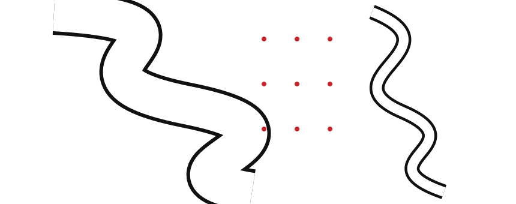

M7 · Alberto Caeiro
Fontes e créditos
Alberto Caeiro, O Guardador de Rebanhos, XX — texto e áudio, Casa Fernando Pessoa
Poema em domínio público. Texto conferido na transcrição da Casa Fernando Pessoa; grafia dos versos preservada. Os excertos A e B, lidos pela ordem da ficha, formam o poema completo.
Tempo decorrido: 0:00

As respostas ficam guardadas neste dispositivo. Os pontos servem para treino.
O Guardador de Rebanhos, XX · «O Tejo é mais belo que o rio que corre pela minha aldeia»